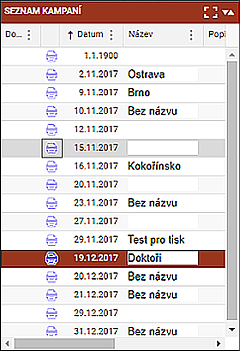
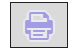
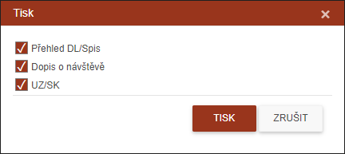

Hromadný tisk

U každé kampaně je zobrazena ikonka tiskárny. Kliknutím na ní se objeví dialog, který umožní uživateli vybrat tisk vybraných dokumentů týkajících se všech dlužníků obsažených v kampani.

Zaškrtnutím jednoho, dvou či všech tří typů se tyto dokumenty vygenerují do zaheslovaného PDF souboru. Heslo k dokumentu nastavuje a spravuje supervizor.